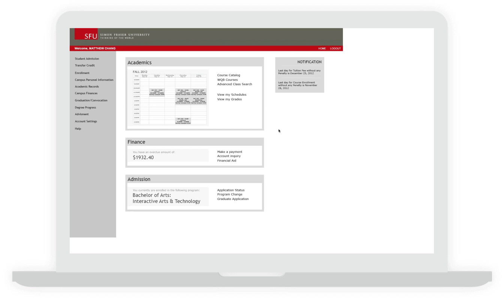

SFU COURSE ENROLLMENT SYSTEM
making course registration more intuitive
TYPE
Human-Computer Interaction Design
ROLE
Project Manager, User Researcher, User Interface Designer
TOOLS
Adobe Illustrator, Adobe Photoshop, Adobe Dreamweaver, Adobe After Effects, Adobe Premiere Pro
The SFU Course Enrollment System project is a conceptual redesign of the existing system, which seeks to improve the course enrollment process for university students at SFU. Here, only the enrollment system was focused, which is a subset to a larger system called the Student Information System.

OBJECTIVE
Course enrollment is often the most stressful time for students and so changes had to be made to enhance efficiency.
To learn about methods of Human-Computer Interaction design concepts, the SFU SIS Enrollment System was chosen. As a student, the system is frustrating to use, especially when there is an additional factor of stress to try to get into all the courses necessary for an academic term so one can graduate. This is due to low visual queries and cues. First, heuristic evaluation was done individually to understand the issues. Next, I facilitated user study sessions of the old system where the team recruited various levels of users from potential SFU students to graduates.
Afterwards, I led brainstorming sessions within the team to ideate potential ideas from layouts to specific user interface components that helps solve user pain points discovered in the user testing session of the old system.
Eventually, I helped produce UI elements of two new prototypes and I facilitated another user tested again to identify comparison results of the old system.